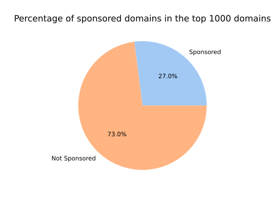
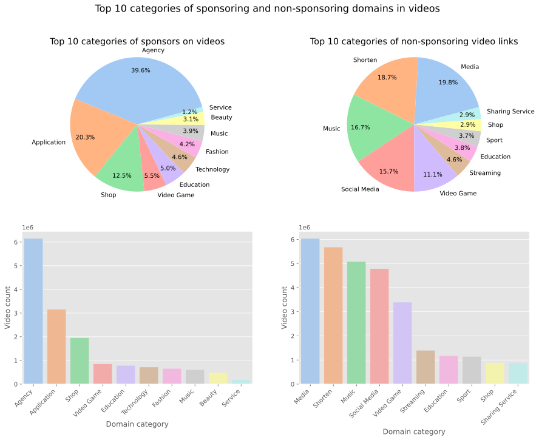
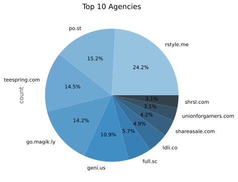
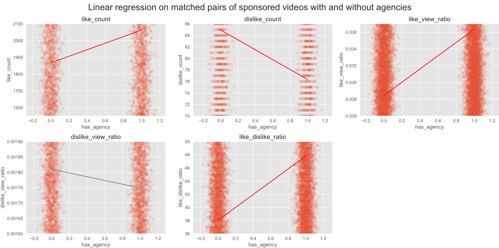

Introduction
Since the onset of YouTube in 2005, content creators have risen to fame with an expanding follower base. Businesses saw this as an opportunity to sponsor their content, to monetize it and to get their share of this fame, exploring marketing potentials with creators. Nowadays, sponsorships are a common practice on the platform, with many YouTubers making a living off of them.
Ad-dressing the Issue
« F**k off with the annoying ads jeez, people are getting head cancer from this s**t. You s**k! »
Sponsorships and ads on YouTube have been a topic of debate among content creators, viewers, and industry experts. Some content creators rely on sponsorships and ads as a primary source of income, but on the other hand of the spectrum, some viewers find them disruptive and annoying.
What are we looking for?
In this data story, we will navigate the YouTube Ad landscape: we suspect that some types of videos might be more likely to be sponsored than others. For example, the Gaming industry is known to be a lucrative market for advertisers, but is it the only one?
From our own user experience, we already have a list of sponsors in mind that we might encounter in our analysis, but are they really the most common ones? Or are we naturally targetted by them because of our own interests? We hope to get a better understanding of the YouTube Ad landscape by analysing the data.
Finally, we will try to summarize our findings to answer the question:
Do sponsorships help content creators build a stronger community, or do they actually have some downsides?
Without further ad-o, let's dive in the data!
Who sponsors what?
Classifying sponsored videos is not a trivial task. We retrieved all the links from the video descriptions and classified the 1,000 most common domains (by hand!) into a category and flagged them as sponsor-related or not.
From these graphs, we notice that about a quarter of domains that come up in our analysis are sponsor-related, which represents more than two-thirds of the total number of videos on YouTube.
Every bar plot is related to the pie chart above itself. We notice that the sponsored domains and non-sponsored domains do not have the same distribution of categories; about half of sponsored domains are related to Shops, Agencies and Video Games. On the other hand, Media and Music are very present among non-sponsored domains.
Taking a look at the data from another perspective, we now see the distribution of categories on videos. Before diving into the data, we did not expect sponsoring agencies to be so popular, but looking at the above pie charts, we see that more than a third of sponsored videos are sponsored by agencies!
Agen-who?
Agencies for monetization on YouTube are companies or organizations that help YouTube creators monetize their content, typically by connecting them with brands or advertizers who are interested in promoting their products or services. YouTubers generally choose an agency that aligns with their interests, goals and needs as creators.
This pie chart shows the top ten agencies that sponsor videos on YouTube. rewardStyle, Po.st and Teespring make up the top three, sponsoring more than 50% of all videos sponsored by agencies together.
Full disclosure: we are sponsored by (n)one of them!
Connecting the Dots
The network below represents sponsors co-occurring together in videos. Using Force Atlas to layout the graph, we see that the graph is dense and clusters are visible. Specifically, play.google.com and apps.apple.com are closely related and located in the center of the graph, indicating that they sponsor a diverse range of videos (take a look at the two large nodes). Additionally, we observe that agencies are omnipresent in the data, sponsoring and targeting a broad range of videos.
Explore this interactive network! Click on the button below to see even more beautiful colors!
Upon closer examination, we can identify two main clusters in the graph. The larger cluster contains sponsors related to Video Games, Technology, and Applications, while the smaller cluster contains sponsors related to Beauty and Fashion. This suggests that tech-related and fashion-related videos tend to form different communities on YouTube. We also observe that shops, such as aliexpress.com and bangood.com, are located on the outer part of the graph, possibly indicating that they target a broader audience rather than a specific community.
Overall, this network provides insights into the relationships between sponsors on YouTube and the communities they target. By better understanding these relationships, we can better understand the sponsorship landscape on the platform.
Sponsorship History 101: Ad-venture through Time
We can now take a look at the evolution of sponsors over time, which will most likely help us understand the dynamics of sponsors. On the next graph, we can see how two of the most important sponsors grew: play.google.com and rstyle.me, which correspond to the Google Play Store and rewardStyle respectively.
At the beginning, they grow exponentially, following the same trend as the overall YouTube platform. But rewardStyle seem to stabilize after 2018 and even starts to decrease, while the Play Store keeps growing.
Interestingly enough, we can notice that for both of them, they are mentioned in videos even before they were created (22nd of October 2008 for the Play Store and 1st of June 2011 for rewardStyle). A possible explanation for this phenomenon is that after the release of the Play Store or rewardStyle, YouTubers modified the description of all of their videos, including those that were already published, to include their links.
We now present the evolution of all categories on an area chart. At the beginning of youtube, agencies dominated the platform until 2012, when the application category took the skyrocket. (I guess you could say it was a real app-solute success!)
We can slightly notice a subtle decrease in the overall number of sponsored videos at the beginning of each year. Indeed, this might be due to three main reasons:
- The month of February has the least number of days in a year.
- YouTubers or sponsors might be taking a break during the holiday season.
- Finally, the decrease might be accentuated by the sponsors being more active before the holiday season, as it is a great time to promote their products.
A strange peak appears on October 2018, which happens to be due to an educationnal Indian channel: Doubtnut. They published an astonishing number of 32,000 videos in 3 days!
If we take a look at the individual evolution of each category, the Application and Agencies seem to skyrocket and follow an exponential growth! However, the other categories seem to all follow a same trend by decreasing after a certain time.
We can also notice a strage peak in the Music category that happens in 2016. Although it coincides with the release of YouTube Music, this peak is due to a now defunct channel called Feiyr (see the wayback machine page). They were the top channel publishing videos containing Music category domain links for the whole year of 2016.
It is interesting to note that individual channels may have an immense impact on the overall trend of videos on YouTube.
What about actual Videos?
In constrast with the previous analysis, we will now focus on sponsored videos. The graph below shows the top 3 sponsors for each video category. As we might have anticipated, many of the videos are sponsored by brands closely related to their content. Agencies also have a great prevalence in all categories.

When looking at the ratio of sponsored to non-sponsored videos, we can see that the ranking is quite different. Except for the Gaming and Nonprofit & Activism categories, which both are at the extreme ends of the spectrum, the ranking makes more sense. The Gaming, Howto & Style and People & Blogs categories have the highest ratio of sponsored videos while Sports and Nonprofit & Activism have the lowest ratio of sponsored videos.
We then explore the data with an observational study, where we define the set of treated videos as the sponsored ones. The graphs below shows the bootstrapped distributions of interesting features to compare between the groups after a maximum matching procedure.
Overall, sponsored videos have:
- More reactions! (even though it means more dislikes..)
- A better like to dislike ratio!
Using the same approach, we classify videos sponsored by an agency as the treated group and those sponsored by another entity as the control group. The graph below shows the distribution of the same interesting features to compare:
How interesting! Videos sponsored by Agencies have:
- More likes!
- Less dislikes!
- More reactions!
- A better like to dislike ratio!
To figure out if Agency sponsorship is the secret sauce for YouTube success, we put it to the test with a regression analysis (gray fits do not have statictical significance).
Our analysis still shows that videos sponsored by agencies tend to perform better on YouTube, with higher levels of likes, fewer dislikes, and more reactions. This suggests that being sponsored by an agency can significantly impact the popularity and engagement of a video. It is possible that agencies, with their professional expertise and experience in marketing and advertising, are able to help YouTubers create content that resonates more with viewers and effectively targets the right audience. In short, partnering with an agency could be the key to YouTube fame!
Our matching approach aims to reduce the effect of confounding factors to the maximum, however, we cannot completely eliminate them. Also, it is difficult to determine whether agencies help YouTubers develop or if successful YouTubers are more likely to attract the attention of agencies. However, it is clear that both parties can benefit from the partnership.
Conclusion
If you're a content creator in the tech, gaming, fashion, or beauty world, you're in luck! According to our research, these categories dominate the sponsored video scene on YouTube. So if you're looking to score some sweet sponsorship deals and work with top brands, these areas might be a good place to start. But don't worry if you're not in one of these categories - there are still plenty of opportunities out there for creators of all kinds. Just keep an eye on the changing landscape of sponsorships and you'll be on your way to building successful partnerships in no time!
Moreover it looks like being sponsorshed by an agency is the way to go if you want a bunch of likes, reactions, and minimal dislikes on your YouTube videos! Our regression analysis showed that videos sponsored by agencies are more likely to be a hit with viewers. So if you are an aspiring creator or an Agency looking to boost the success of your videos, consider teaming up with an agency - it might just be the ticket to internet fame!